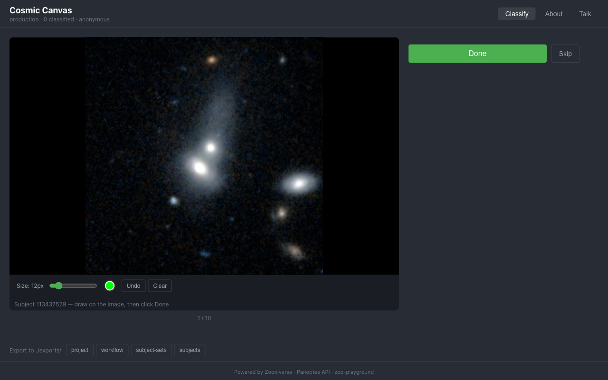

Cosmic Canvas
Brush-tool classifier for galaxy morphology
A drawing-based classifier built for annotation tasks where volunteers paint over features in astronomical images using a configurable brush tool — identifying tidal tails, star-forming regions, and other morphological structures in galaxy imagery.